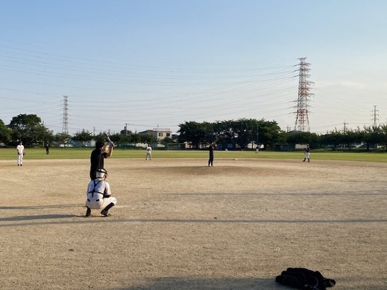
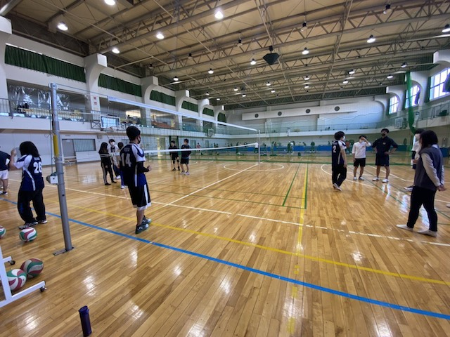
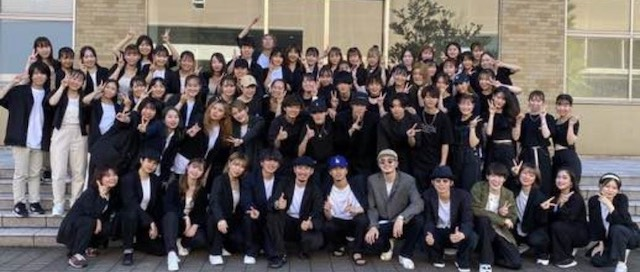
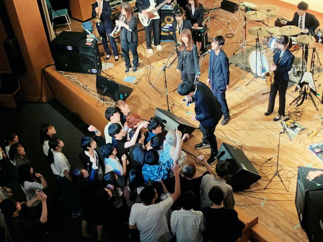
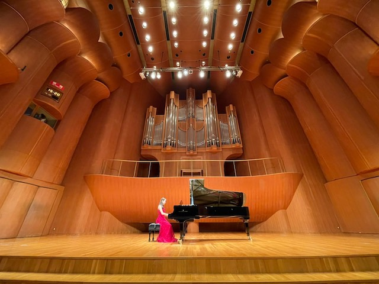
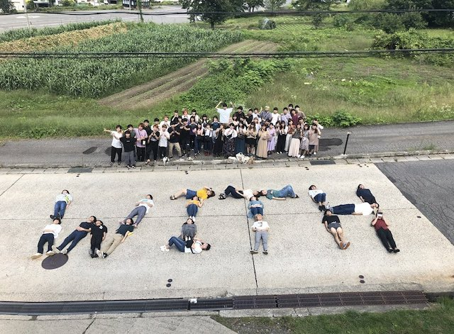
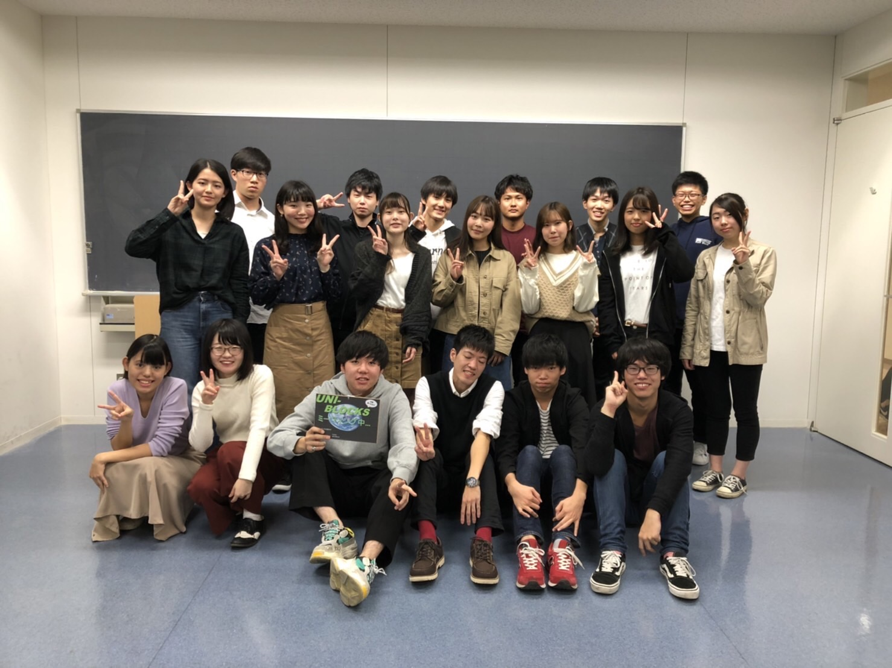
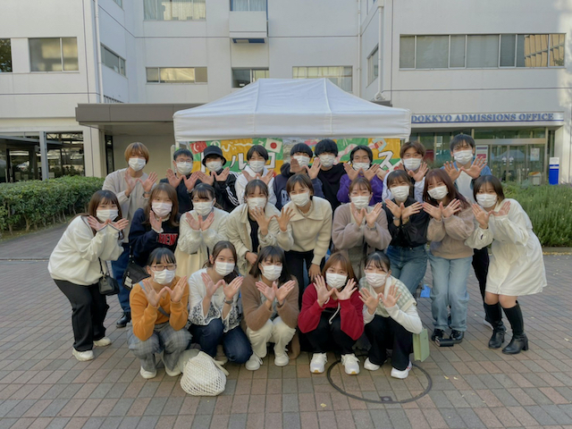

獨協Sharks

男女ともにワイワイ楽しく活動しています！時には女性プレイヤーもいて、週1回ではありますが楽しく野球をしよう！というのがうちのモットーです！
【活動日時】 水(３限後)
【活動場所】 草加市営総合運動場
【経費】 基本的になしですがイベント毎に集金します！
【兼部】 可
バレーボール愛好会ラディッシュ

こんにちは！バレーボール愛好会ラディッシュです！私たちは主に、水曜日と金曜日の週2回活動をしています。
活動内容は、男女混合でチームを組み楽しくバレーボールをしています。5月に新歓合宿、9月に夏合宿、2月には春合宿があります。
合宿では朝から夕方までバレーをし、夜はみんなで楽しく集まるので学年を超えて仲を深めることができます。
また、OB・OGさんも遊びに来てくださるので交流も盛んにあります！バレーボール以外にもBBQをしたりと、大学生活の中でたくさんの思い出をつくることができます。
経験者も初心者もどちらも楽しめるので少しでも気になったら気軽に遊びに来てください！楽しみに待っています！！！
【活動日時】 水・金
【活動場所】 草加市民体育館、草加記念体育館
【部費】 月1000円
【兼部】 可
ダンスフリースタイル

こんにちは！ダンスフリースタイルです！
私達は部員数約200名の学内有数のダンスサークルです。
Break、Lock、Jazz、Hip-hopの４ジャンルで活動し、一年を通して学内・学外問わず様々なイベントで踊っています。
特に、11月にある雄飛祭での公演は観客動員数が1000人を超える一大イベントです。
ダンスサークルと聞くとチャラい、怖いなどあまり良いイメージをもたない人も多いと思います。しかし、私達はダンスのスキルアップを目的とし、真剣に練習しています。
やるときはやる、楽しむときはとことん楽しむのがフリスタです！もちろんダンス未経験の方大歓迎！
皆さんもダンスを通して、かけがえのない仲間と数えきれないほどの思い出を一緒に作っていきませんか？
【活動日時】 火・金
【活動場所】 黎明ホール、暁月ホール
【部費】 年4000円
【兼部】 要相談
NEW Folk Union
部員の半数以上が初心者から楽器を始めています。月に1回、みんなが楽しめるライブをしており、邦ロックから洋楽、アコースティック、メタルまで幅広いジャンルの演奏をしています。
ピアノ・フォルテ・ソシエッテ

私たちは毎週水曜のお昼と放課後に集まり、楽しく活動しています！
ピアノを弾くのが主な活動で、自分のペースで自由に練習することができます！クラシックやJ-pop、映画の曲など様々なジャンルに挑戦しています。
主な行事は、年4回行われる定期演奏会と、夏合宿です。また、11月の雄飛祭では毎年ピアノカフェを開き、地域の方々とも親睦を深めています！
ピアノ経験者はもちろん、これから始めたい方も大歓迎です！部員同士の仲が良く、活動日が水曜だけで兼部しやすいのもこのサークルの良いところです。
少しでも興味ある方はぜひ来てください！お待ちしてます♪
【活動日時】 水曜日
【活動場所】 E棟311
【部費】 半期2000円
【兼部】 可
Music Company WITH

私たちの団体では流行の邦ロックから洋楽、インスト、インディーズ、ハードロックまで幅広いジャンルのコピーバンドをすることができます！
年6回のライブに向けて各々が好きなバンドを好きな人同士で組むため、学年関係なく一緒にライブをすることができます！
経験者だけでなく、大学から楽器を始めた人も多く、初心者でもやる気さえあれば大丈夫！経験者でも初心者でも是非一度見学に来てみてください！
ライブの他にも夏の音楽合宿、BBQ、春休みのスノボ合宿があり、共通の趣味を持った仲間と学年関係なく楽しめます！
興味を持ってくれた方は是非活動場所まで足を運んでみてください♪
【活動日時】 木曜日(昼休み)
【活動場所】 E棟312教室
【部費】 年6000円
【兼部】 不可
UNI-BLOCKS

私たちは、草加を中心に活動しています。
6月と11月に行われる「ゴミ拾い甲子園」では、他大学からもボランティア団体が集まり、荒川河川敷周辺のゴミ拾いを行います。
夏休みは、子どもの学習支援やイベントのお手伝いなどを行っています。
ボランティアにも様々な活動がありますが、UNI-BLOCKSはボランティア初心者の方でも楽しく取
り組める活動をしています。
活動も任意なので、自分の興味のある活動のみに参加することができるのも特徴です。
ボランティアに興味がある方、身近なボランティアから始めてみたい方は、是非UNI-BLOCKSへ！！
【活動日時】 水・木
【活動場所】 E棟307教室
【部費】 半期100円
【兼部】 可
WAP

私たちWAP（we are pieces）は獨協大学のボランティアサークルです。活動内容としては、主に地域ボランティアを行っています。
子ども食堂のお手伝いと学習支援を基本活動として、定期的にごみ拾いなどの、その他のボランティアも行っています。
私たちはみんなの家となるようなサークルを目指しており、いつもアットホームな雰囲気で活動しています。
少しでもボランティアに興味がある方や、サークルに迷っている方はぜひ遊びに来てください！
【活動日時】 第一、第三水曜日(放課後) 第二、第四木曜日(昼休み)
【活動場所】 フリースペース
【部費】 年2000円
【兼部】 大歓迎
Hi-Five-Project
Table For Two（TFT）という活動を知っていますか。世界人口約70億人の内、約10億人が栄養失調の一方で肥満人口は約20億人います。
TFTはこの問題に着目し、ヘルシーな食事をとり同時に途上国の子供たちに食事を届けることを目標に14か国で行われるアクションです。
私たちは学内でお弁当販売やイベントを通してこのTFT活動を支援しています。先進国で健康な食事を食べて、購入金額の一部が途上国の子供たちの学校給食に寄付される、そんな素敵な活動を私たちと一緒に盛り上げてくれる人を募集しています！
【活動日時】 週1回(昼休み)
【活動場所】 東棟教室
【部費】 なし
【兼部】 大歓迎
ボードゲーム研究会
このサークルでは有名なものからマイナーなものまで、国内外問わず古今東西のボードゲームを大量に揃えています！ジャンルも1対1で真剣勝負のできるものから、大人数でワイワイ遊べるものまで！
もちろん初心者でもいつでも気軽に楽しめます！
ほかにも、ただ部員同士で遊ぶだけではなく、月に一回、越谷サンシティホールにてボードゲーム体験会「わっふる」を主催し、地域の方々と交流しています！
さらに、雄飛祭でもボードゲーム体験会を開いたり、東京ビッグサイトで行われるイベント「ゲームマーケット」に買い物に行ったり！
兼部も可なので、気軽に足を運んでみてください！
【活動日時】 火・木
【活動場所】 東棟3階
【部費】 半期1000円
【兼部】 可
TRPGサークル「ダイスの目のまま気の向くまま」
『テーブルトーク・ロール・プレイング・ゲーム、略してTRPG』
勇者になって、世界の危機と戦う……テレビゲームや携帯ゲームで、そういう体験をした方はいるでしょう。
私たちは、その体験をより強い臨場感と共に味わうことのできる『会話型RPG＝TRPG』を楽しみ、広めるためのサークルです！
TRPGではゲームの代わりに‘人’が司会進行し、そこに参加するプレイヤーは自分で作ったキャラクターになった気分で、様々な世界を冒険していきます。そのため、その時の仲間や思い付きによって、一期一会のストーリー展開が楽しめるのも醍醐味です！
オンライン&対面それぞれで活動体制を整えて、皆さんをお待ちしております！
【活動日時】 毎週月曜日4限後
【活動場所】 東棟教室など またはオンライン
【部費】 年間1000円
【兼部の可否】 可
ICPC Lab
獨協大学唯一のプログラミングサークルであるICPC Labです。
私たちの活動目的はプログラミングの学習を通じて獨協生の情報学の知見を高める事です。
主な活動はプログラミング言語の学習やwebサービスやゲームの開発であり、分からないところは互いに教えあい研鑽に励んでいます。
プログラミングと聞くと難しそうなイメージがあるかもしれませんが、私たちが分かりやすく一から説明しますのでパソコンに触れた事がない人でも安心して活動に参加できます！
大学で新しい事に挑戦したい方！ ICPC Labでプログラミングを始めてみませんか？
初心者も経験者も大歓迎です！！
【活動日時】 火・水
【活動場所】 E棟418教室など
【部費】 なし
【兼部】 可
鉄道研究会
鉄道研究会は、創部7年目のサークルで、いったん消滅したものの復活を遂げた珍しいサークルでもあります。
活動内容として、主に週1回の部会で鉄道について語ったり、雄飛祭で鉄道模型やプラレールの展示をしたりしています。
鉄道好きはもちろんのこと、旅行が好きな人やその他の乗り物が好きな人も大歓迎！正直なところ、部長も鉄道よりバスの方が好きです(おい笑)
兼部ももちろん可能ですので、男女問わず気軽に見学に来てください！
鉄道模型、グッズなどはいりません！鉄道に愛がある人！興味ある人！待ってます！！！
【活動日時】 水曜日
【活動場所】 フリースペース
【部費】 年約6000円(変動あり)
【兼部】 可
LAWN テニスサークル

獨協大学で一番歴史の長いサークルです。毎週水曜日と金曜日に大学近くの草加公園にて活動しています。テニスの他にも様々なイベントがあるなどと、勉強も遊びも全力なアットホームなサークルです。
【活動日時】 水・金
【活動場所】 草加公園
【部費】 半期5000円
【兼部】 可
APPLE テニスサークル

月曜日と水曜日、谷塚駅近くの吉町テニスコートで活動しています。旧小学校の校舎でお泊りをしたり、球技大会をしたり、スノボの合宿をしたりとテニス以外にも沢山のイベントがあることが特徴です
【活動日】 月・水 (16:00~19:00)
【部費】 月2000円
【兼部】 可
WINDY RACKET TEAM

毎週火・金曜日の週２回元気に活動中！テニスだけではなく、夏には運動会、冬にはスノボ等様々なイベントを楽しむことが出来る、テニスも遊びも全力のサークルです。
【活動日】 火・水・金
【活動場所】 スポートピア谷塚
【部費】 年15000円
【兼部】 可
GREENWOOD

学内のテニスサークルが一堂に集う熱き戦い獨協オープンで17連勝している強豪サークルです。毎週月・水・金の3回、上級者から初心者まで仲良くワイワイ活動しています。
【活動日】 月・水・金
【活動場所】 川口グリーンテニスプラザ
【入会金】 6000円
【部費】 2500円×10回
その他ご相談ください
【兼部】 要相談
エカール基礎スキー愛好会
こんにちは!私たちエカール基礎スキー愛好会は、基礎を中心としたスキーサークルです。技術の向上が目標ですが、コンセプトは「楽しく滑る」ということです。スキーを思いきり楽しみ、大学生活での思い出を作ることを大切にしています。
メインイベントである合宿は年に2回ありますが、プロのインストラクターの指導があるので、初心者でも確実に上達できます。むしろ初心者大歓迎です!
5月にはBBQやディズニー、夏休みには旅行など、スキー以外のイベントも充実しています!
普段は火曜日と金曜日の4限後にグラウンドや体育館で バスケ・サッカーなどをしています。エカールは学年や男女に関係なく仲の良いアットホームなサークルです。 ぜひ一度きてみてください!お待ちしてお ります。
【活動日時】 火・金 年2回の合宿
【活動場所】 人工芝グラウンド、公園、体育館等
【部費】 半期5000円
【兼部】 可
EVIAN
こんにちは! EVIAN snowboarding teamです!
普段は月2回程度集まってみんなでご飯を食べたり、映画鑑賞会をしたり、ディズニーに行ったりしています
スノボのシーズンになれば各自予定のあう友達とスノボに行ったり...
2月には合宿もあります!毎年1年生の多くは初心者ですが、先輩たちはみんなフレンドリーで優しく教えてくれるので安心してください(^○^)
活動は強制ではなくて来られる日だけでもOKなので、のんびり活動したい方はぜひぜひ来てください!兼部、兼サーも大歓迎です!メンバー一同お待ちしています!☆
【活動日時】 金(放課後)
【活動場所】 本学周辺
【部費】 年間フルに参加した場合は50000円程度です。
兼部・兼サー歓迎です
基礎スキー愛好会シュビンゲン
私たちはスキーシーズンの冬だけでなく、夏場も週2日で活動しています!
内容としては皆で楽しく、冬に向けて体づくりをやっています!
他にも、新歓合宿・BBQ・ ドライブ・ディズニーなど様々なイベントもやります!
部員の9割は大学からスキーを始めているので、 初心者でも大歓迎です!もちろん経験者も大歓迎で す!また「山籠もり」と言ってこのサークルでしか経験できないこともやっています。
そして3月には 学生大会に参加します。皆さんの入サーお待ちしています!!
【活動日時】 水・金
【活動場所】 綾瀬川左岸広場・アリーナトレーニングスペース(雨天時)
【経費】 年約20万円
【兼部】 要相談
軟式野球サークルAvengers
獨協大学公認の軟式野球サークルです。中学、高校などで野球経験がある方はもちろん、初心者でも大歓迎です！
活動としては、平日週1回の練習と土日や平日ナイターで行う練習試合、長期休みや土日休みで行く大会合宿が中心です。
さらに、野球以外にも冬にはスノボ合宿、フットサル大会、バーベキューなど楽しいイベント盛りだくさんです！
「中学、高校まで野球やってたから大学でも続けたいけど、部活はちょっとな…」、「今まで野球あんまりやったことないけど、やってみたいな～」といった思いをお持ちの新入生の皆さん、ぜひ僕たちと一緒に楽しく野球やりませんか？？
【活動日時】 月または水 土・日(練習試合等)
【活動場所】 草加総合グラウンド
【部費】 年4~5000円
【兼部】 可
Keshikas
前代表が掲げたテーマを継続して、活動に取り組んでいます。
我々は「サッカーをやりたいけど、部活には入れない、でもサッカーがしたい。」といった人のニーズに応えられるようなサークルを目指します。なので、競技そのものの内容や、勝ち負け、もちろんそのなかで楽しむことも重要視しており、初心者大歓迎というようなサークルとは少々異なります。
気になりましたらメールでのお問い合わせ、又は月曜日に本学のグラウンドにお越しください。
【活動日時】 月曜日
【活動場所】 本学グラウンド
【部費】 なし
【兼部】 可
ELPAYASO
“楽しむこと”を第一優先としたサークルです。なので「フットサル・サッカーをやったことがない」、「運動神経に自信がない」といった方でも大歓迎です！
活動は毎週火曜日に大学校内のフットサルコートで行うので、場所代・電車賃もかかりません！また、他のサークルとの交流も盛んで、時々他のサークルとも一緒に活動することがあり、コミュニティーを広げるにも最適な環境となっています。
活動後は部員同士で楽しく食事をして仲を深めたりもしますよ！イベントは要望があれば参加・企画する形なので、たくさん思い出を作りたい人、金銭面に不安がある人など、その時々の状況に応じて皆さんの様々なニーズに応えられます！
繰り返しになりますが、男女・初心者・経験者に関わらず楽しむということをコンセプトとして活動しています。少しでも気になったという方は是非一度グラウンドに足を運んでみてください。優しくユニークな先輩達が皆さんをお待ちしています！
【活動日時】 火曜日
【活動場所】 本学フットサルコート
【部費】 なし
【兼部】 兼部OK!!
ESPERANZA UNITED
みなさん、こんにちは！ ESPERANZA UNITEDです。
私たちは男女ミックスでフットサルを行っています！月曜日は割としっかりフットサル！木曜日は楽しくワイワイ緩～く活動しています。
月に一度は大会にも出場し優勝目指して頑張っています。女子プレイヤーも多数在籍しており、もちろん大会にも出場しています。初心者でも大会出場可能です。
BQや運動会、合宿などイベントも盛りだくさん！マネージャー・プレイヤー共に大歓迎！！もちろん初心者も大歓迎！！エスぺで最高の思い出つくりませんか？
【活動日時】 月・木
【活動場所】越谷フットサルコート、本学グラウンド
【部費】 半期4000円
【兼部】 可
DEF.FC
毎週水曜日に学校のグラウンドでフットサルをしています！！全国大会経験者から未経験者まで在籍してます。ガチでやりたい人も、大学で友達をたくさん作りたい人も大歓迎です！！レディースチームもあるので、女の子はプレーヤーでもマネージャーでも！！
大会、合宿、文化祭全ての行事にみんなで楽しく！！参加したい人達待ってます！！
【活動日時】 水曜日
【活動場所】 本学グラウンド
【部費】 0円
【兼部】 可
LYNX
みなさん、こんにちは！LYNXでは週に2回活動しています。夏と冬には合宿を行って親睦を深めたり、また春や秋にはバスケの大会に参加したりもします。
LYNXは先輩後輩関係なく、みんな仲良く楽しい雰囲気でバスケをしています。日頃の活動では、ゲームをメインで行っており、大会前などは出場メンバーでチームを組み、本番を想定した練習をしたりもします。
時には本気で、時にはゆるーく、メリハリある活動をしています。
楽しくやりたい！だけどちゃんとやりたい！という方はぜひぜひ！
初心者もいるのでバスケに興味のある人は気軽に見に来てください！
【活動日時】 月・木
【活動場所】 本学アリーナ、草加市民体育館、草加中学校
【部費】 半期3000円
【兼部】 可
UNITES
初心者大歓迎！もちろん経験者大大大歓迎！！
アットホームさが売りのUNITESです☆
普段の活動ではゆるゆるとバスケしたり、時には本気のバスケをしたりと、初心者も経験者も楽しめます！たっくさんバスケできます！！年に2回の学内戦では、男子も女子も、初心者も経験者も大活躍！夏冬の合宿ではバスケだけでなく運動会やスノボもします(^^♪
同期はもちろん、先輩や後輩どうしでもとっても仲が良く、みんなでお出掛けや旅行に行ったりするほどみんな仲良しです！
UNITESの仲間と大学生活楽しみましょう！！！！！
【活動日時】 週1回(火or木)
【活動場所】 本学アリーナ、市民体育館
【部費】 年3000円
【兼部】 可
Groovy Company
毎週水曜日近くの体育館で活動してます。活動内容は主にバスケ＆バレーです。メンバーの中でも初心者はたくさんいるのでバスケもバレーもやったことないよ、って人でも大歓迎です！
また、毎月バスケやバレーだけじゃなくて夏にはBBQ、冬にはスノボ合宿とたくさんのイベントを行ってます！
うちのサークルの自慢は仲の良さです！学年ごとの隔たりがなくて先輩後輩皆家族のような存在で学校でも気づいたら自然にみんな集まってきます！
また、活動外でもみんなそれぞれが仲良しなので海外旅行などに行ったりもしています！充実した大学生活をみんなで送りませんか
【活動日時】 水曜日・他
【活動場所】 草加市民体育館
【部費】 半期3000円
【兼部】 可
獨協大学武道空手鷹鸇
みなさん！空手は優れた身体能力を持つ人や、気が強い人しかできないというようなイメージを持っていませんか？
私たち獨協大学武道空手鷹鸇は、部員の９割が空手未経験者で、運動経験がない人も多数おり、約４割が女性です！それでも、毎年多くの部員が黒帯を取得しています。
私たちは獨協大学の理念である「大學は学問を通しての人間形成の場である」の言葉をモットーに、護身武道空手を通じて立派な人間性を育めるよう日々修練に励んでいます。
大学生活を充実させたい人、運動が苦手な人、誰でも大歓迎です。
さぁ、大学入学という機会に空手を始め、新しい一歩を踏み出してみませんか？
【活動日時】 火木金(昼) 水(放課後)
【活動場所】 35周年記念館アリーナ、本学グラウンド
【部費】 月3000円
【兼部】 可
アミティー・バドミントン愛好会
私たちアミティーは、毎週月曜日にみんなで楽しくバドミントンやおしゃべりをしています。
経験者はもちろん初心者の部員も多く、誰でも楽しめるサークルです。
男女、学部、学年を問わずとっても仲がいいです！バドミントンをやりたい人、友達を作りたい人はぜひ、アミティーに一度遊びに来てください！
【活動日時】 月曜日
【活動場所】 花栗南小学校
【部費】 年3000円
【兼部】 可
YERBA BUENA
私たちYERBA BUENA（ジェルバ・ブエナ）は毎週火曜日と金曜日に活動しています。
火曜日はプロの先生にレッスンしていただき、金曜日は自主練に励んでいます。
フラメンコって難しそうー…と思っている方、不安にならなくて良いですよ！私たちも全員未経験者でしたし、先生や先輩が一から丁寧に教えてくれます。
学年関係なくアットホームな雰囲気でお互い切磋琢磨しながら楽しく練習しています♪
私たちの一番の目標は雄飛祭での披露です。その他にも地域のお祭りや福祉施設、イベント等にも出演しています。
ダンスやバレエが好きな人、スペインに興味がある人、華やかな衣装が好きな人、どなたでも大歓迎です！
今は女子部員のみですが性別関係なく募集しているので興味がある方はぜひ見学にいらしてくださいまってま～す！
【活動日時】 火・金
【活動場所】 黎明ホール、暁月ホール
【部費】 4000円
【兼部】 要相談
Singing club
このサークルの特徴を紹介します。1つ目は全員で1バンドの形態なので、全てのライブに全員で出られることです！2つ目は一般的なバンド編成(ボーカル、ドラム、ベース、ギター、キーボード)に、管楽器隊(トランペット、サックス、トロンボーン)とコーラスが加わって演奏することです。この編成はこの団体ならではの魅力です！演奏するジャンルはfunk、soul、R&Bなどの洋楽が中心ですが、邦楽もやっています！過去にカバーしたアーティストはStevie Wonder、EarthWind & Fire、MISIA等…洋楽に疎くても、演奏する中で詳しくなれるので心配ありません！現在、全楽器部員を大募集中！ぜひ気軽に見学・ライブにきてください～！
【活動日時】 水・土
【活動場所】 スタジオA・B
【部費】 月1000円
【兼部】 要相談
獨協能楽会
毎週火曜日に仕舞・謡の稽古、2か月に一度の能楽鑑賞、秋と新年に「櫻間同門会」にて発表会があり、着物を着て立派な能舞台で仕舞と謡を披露します。
海外に行きたいけど、外国人の友達を作りたいけど、日本の伝統文化について何も知らないな…。
そのような方にも「能楽」はぴったりですよ。プロの能楽師の先生が一から直接教えてくださるので、どんどん上達していきます。なので、能楽について何も知らない初心者でも安心してください！
能楽は美しく奥深い日本語や綺麗な動きを、目と耳で感じることができます。
ただ見学に来るだけでも大歓迎ですので、ぜひお気軽にメールで見学の旨を送ってください！また火曜日に直接「楓」に来ていただいても大丈夫です。
【活動日時】 火曜日
【活動場所】 学生センター6階 楓
【部費】 月1000円
【兼部】 可
韓国文化研究会 Hana
私たちは、日韓の架け橋になることを目標に、韓国人留学生との交流会、K-POPのコピーダンスを中心とした活動をしています。韓国が好き！K-POPが好き！なメンバーで楽しく活動しています！男子も女子も大歓迎です！少しでも興味があれば、SNSのDMや、メールアドレスまでご連絡ください。お待ちしております！
活動日時:月曜日(放課後) 火曜日(昼)
【活動場所】 暁月ホール、E棟教室
【入会金】 500円
【部費】 月400円
【兼部】 基本的には可能
獨協かるた会
獨協かるた会は2017年に立ち上げたばかりの団体です。会員全員の年2回以上の大会参加とD級昇格を目指しています。会員全員が競技かるた未経験という状態から始めたので、かるたのルールを知らない人や百人一首を覚えていない方でも興味がある人なら誰でも歓迎です。同じ段階を経た先輩たちが優しくサポートします！授業後の活動では主に実践的な試合を行っています。長期休暇には合宿を、雄飛祭（学祭）後には打ち上げなど、通常活動以外でもメンバーの仲を深めるイベントが多くあります！興味のある方はぜひ活動日に楓へお越しください。想像以上の試合の迫力に魅了されること間違いなしです。私たちと一緒にかるたで心を通わせてみませんか？
【活動日時】 水・木
【活動場所】 学生センター6階 楓
【部費】 年2500円
【兼部】 歓迎です！
獨協模擬国連
こんにちは！ 2019年に発足した獨協模擬国連です。ところで、今この文章を読んでいるあなたは「模擬国連とは何か」と思っているでしょう。簡単にいうと、模擬国連とは参加者が各国の大使となり、国連の会議を中心とした国際会議をシュミレーションします。
参加者は担当国の国益を設定し、政策立案を行い、会議内で政策を通すべく戦略的に行動します。実際の国際会議で話し合われている問題を各国の立場から考えることによって、国際問題の難しさを理解すると同時に、その解決策を模索する活動です。
1923年にハーバード大学で始まったこの活動は、今や世界60カ国以上に広まりました。日本では、北海道から沖縄まで、多くの学生が模擬国連に関わっています。
このサークルでは主にリサーチを中心に行い、各自外部の大会に積極的に参加して個人のスキルをアップさせる場所となっています。
【活動日時】火曜日
【活動場所】図書館
【部費】なし
【兼部】可
La Girafe
私たち“La Girafe”はフランス語学科唯一の公認サークルです。履修や文法など、分からないことがあれば何でも解決します。活動は毎週金曜日に行っています。活動内容は映画鑑賞、フランス料理会、フランス語を使った簡単なゲーム、夏合宿など楽しい企画を沢山用意しています。みんなで遊びに行ったり、サークル外での交流もしたりします。
しかし、遊びだけでなく時にはしっかりと勉強をしているのも“La Girafe”の良さです。普段使えるフランス語や文法を一緒に把握しましょう！こんな私たちと一緒にゆるく楽しく活動をしてみませんか？入会ぜひ、お待ちしております
【活動日時】 金曜日
【活動場所】 ICZ4階
【部費】 年3000円
【兼部】 可
April Year Project
初めまして！エイプリルイヤープロジェクトです！
突然ですが、みなさんは人を喜ばせたり笑顔にさせたりすることは好きですか？周りの人を笑顔にすると自然と自分も幸せな気持ちになりますよね！
私たちは楽しむことをモットーに何をしたら周りの人を笑顔にすることができるかを日々考えて行動しています。
具体的には階段アート、七夕には短冊の設置、雄飛祭ではゴミ集め、勤労感謝の日には大学の職員の方に手作りのプレゼント作りなどをしております。
活動も基本昼休みのみなのでアルバイトや勉強との両立もしやすいです！
何よりもとても明るく人柄の良いメンバーが揃っているので伸び伸びと活動に参加することができます！
どのサークルに所属するか悩んでいる方は是非体験に来てみてください
【活動日時】 月・木
【活動場所】 学生センター
【部費】 年2000円
【兼部】 可
演劇サークル 劇団しろくま
こんにちは！劇団しろくまです！今年で創設3年目を迎える比較的新しいサークルです。当団は大学から演劇を始めた人が多いので、「演劇に興味はあるけどやったことがない」というあなたも大丈夫！もちろん経験者の方も大歓迎です！
「みんなが主役」をテーマに活動しており、それぞれが必ず何らかの役割を担い、全団員が一丸となって一つ一つの公演を行っています。部員数は少ないですが、その分結束力が強い団体です。
何か新しいことをしてみたい方など是非見学にいらしてください、お待ちしております。
【活動日時】火・木
【活動場所】東棟311教室など
【部費】半期1000円
【兼部】可
お笑いサークル ルナジリオ
お笑いサークルには「演者」と「スタッフ」の２種類の役割があります。演者はいわゆる芸人のことで、自分でネタを考え舞台に出て披露します。お客さんの笑顔を頂くというのも貴重な体験ですね。
スタッフは裏方さんのことで演者のサポートをする役割のことです。舞台の音響や照明の調節をしたり、ライブのビラやオープニング映像を作ったり様々な仕事があります。
また、大学お笑いの大会などもありそこで結果を出せるように努力をしています。ルナジリオも一番規模の大きい大会で２年連続で決勝進出者を輩出しています。ルナジリオやお笑いに少しでも興味を持ってくれた方の入部をお待ちしております！
【活動日時】 金(放課後)
【活動場所】 フリースペース
【部費】 なし
【兼部】 可
LANKA